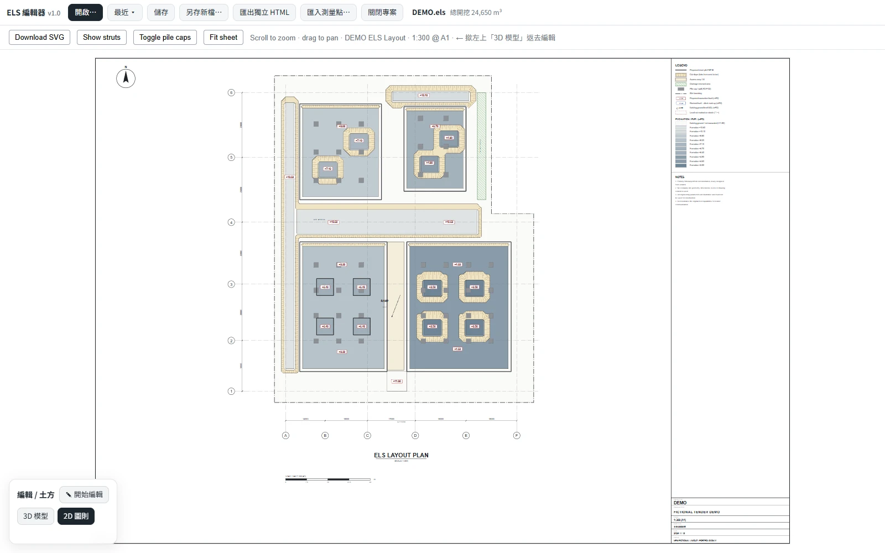

§ 重點
一眼看懂
- 要解決
原圖是手繪、手塗顏色的平面圖，分區和標高靠顏色及手寫標示。
- 流程
- 紙上草圖同事在一般紙上畫好分區和標高，上傳草圖。
- 同一份設定單檔 HTML 讀入設定，重建 3D 模型、2D 圖則和剖面；可旋轉並移動剖切線。
- 不用 AI 也能改HTML 本身就是編輯器，同事可以像用小畫家一樣直接畫和改投標模型。
- 工具
- Three.js
- JavaScript
- Python
§ 試用
親手試用


技術與取捨
- 一份資料，兩種圖
- 分區與標高共同驅動 Three.js 模型及 2D 圖則，調整設定後同步更新。
- 方案可檢視
- 旋轉、切換視角及移動剖切線，讓團隊比較開挖標高和支護位置。
§ 問題問題與限制
- 原圖是手繪、手塗顏色的平面圖，分區和標高靠顏色及手寫標示。
- 平面、立體、剖面和土方數字必須互相一致。
- 修訂常以截圖上的藍框或色筆標記傳來。
§ 做法做法細節
公開地盤是重新設計的虛構配置，包含 20 個分區、8 段板樁和 43 組樁帽。
由草圖到設定
- 讀圖
- 視覺模型按 Skill 定義的格式讀草圖（顏色、線型、標高寫法），輸出結構化設定；「圖上有標示」和「推測」分開列出，推測項確認後才建模。
- 設定
- .els 是一份 JavaScript 格式的文字設定：分區多邊形和開挖標高（mPD）、斜坡帶、斜道、板樁線、樁帽和排水預留。
單檔 HTML 引擎
- 3D
- Three.js（WebGL）由設定生成開挖面、斜坡、板樁和樁帽，加上泥土紋理和等高線；可旋轉，剖切線可移動。
- 2D
- 同一份設定輸出 A1 SVG 平面圖則和剖面，所以平面、立體和剖面不會互相矛盾。
- 土方
- 由同一份設定計算開挖土方（bank volume），再以獨立的 Python 計算對照；實際投標模型兩者相差 0.3% 內。
- 編輯器
- 可改標高、拖角點、畫多邊形，土方即時更新；不用 AI 也能改模型。
修訂與交付
- 標記
- 同事在截圖上用藍框寫新標高，或用顏色筆畫出改動；AI 把標記換算成設定修改，再重出全部視圖。
- 測試
- 編輯器以真實滑鼠操作做端到端測試，18／18 通過。
- 交付
- 單一 HTML 檔放在公司伺服器，瀏覽器就能打開，不受防火牆限制。
- Skill
- 整套方法寫成 Skill（els-plan-to-3d），下一個投標照同一格式做。
紙上草圖
同事在一般紙上畫好分區和標高，上傳草圖。視覺模型按 Skill 定義的格式（例如哪種顏色代表甚麼）寫出結構化設定。
同一份設定
單檔 HTML 讀入設定，重建 3D 模型、2D 圖則和剖面；可旋轉並移動剖切線。
不用 AI 也能改
HTML 本身就是編輯器，同事可以像用小畫家一樣直接畫和改投標模型。
架構：模型、程式與人手的分工
- 人手紙上草圖
同事在一般紙上畫分區、標高和支護，拍照或掃描上傳。
- 模型視覺模型讀圖
按 Skill 定義的格式（例如哪種顏色代表甚麼）讀圖，並把「圖上有標示」和「推測」分開列出。
- 人手逐項確認
推測的項目確認後才開始建模。
- 程式結構化設定 (.els)
分區、標高、斜道、板樁、樁帽寫成一份 JavaScript 格式的文字設定。
- 程式3D、2D 與剖面
單檔 HTML 用 Three.js 讀同一份設定，重建 3D 模型、A1 2D 圖則和剖面；剖切線可移動。
- 程式土方計算
由同一份設定計算開挖土方（bank volume）。
- 人手修訂
同事可直接在 HTML 編輯器內修改；截圖上的標記亦可由程式換算成新標高或外形，再重出全部視圖。
關鍵決定與取捨
採用單檔 HTML，內嵌 JavaScript 繪圖
不採用打包成 EXE 桌面程式
要交給同事並放在公司伺服器上運行；EXE 很可能被公司防火牆封鎖，單檔 HTML 用瀏覽器就能打開。
採用做成可重複的做法
不採用每次投標做一次性模型
之後還有很多投標模型要做，所以用 Skill 記錄建模方法和優化方向，下一個模型照同一套格式做。
採用HTML 本身就是編輯器
不採用只輸出看圖用的模型
完全不用 AI 時，同事也可以像用小畫家一樣，直接在 HTML 內畫和改 3D 投標模型。
採用紙上草圖 → 視覺模型 → 設定檔
不採用要求同事學 CAD 或 3D 軟件
同事只需在一般紙上畫，視覺模型按 Skill 的格式寫出 JS／TXT 設定，HTML 由設定重建 3D 模型。
採用一份設定驅動所有視圖
不採用3D 和 2D 分開繪製
修訂只改一處，平面、立體、剖面和土方不會互相矛盾。
// DEMO.els：一份專案設定同時驅動 3D 模型、2D 圖則、剖面和土方（示例地盤）
const GRID = {"x":{"A":0,"B":14,"C":29,"D":46,"E":64,"F":82},"y":{"1":0,"2":18,"3":38,"4":60,"5":83,"6":106}};
const LEVELS = {"existingGL":11.8,"modelBase":-3.5};
const RAMP = {"poly":[[36,8],[42,8],[42,53],[36,53]],"from":{"p":[39,52],"level":10.6},"to":{"p":[39,9],"level":8.2}};
const REGIONS = [
{"id":"WEST","name":"西翼施工平台","level":8.2,"src":"red","poly":[[6,8],[35,8],[35,52],[6,52]]},
{"id":"EAST","name":"東翼主開挖區","level":4.6,"src":"red","poly":[[44,8],[79,8],[79,52],[44,52]]},
// …
];
const SHEET_PILES = {"top":12.3,"profile":{"pitch":0.4,"depth":0.125},"lines":[
{"id":"SP1","note":"西翼支護","toe":2.1,"pts":[[5,7],[36,7],[36,53],[5,53]],"closed":true},
// …
]};
const SLOPE = {"defaultDeg":38};
// tools/els.html：打開 .els 檔前先檢查必要設定
function checkConfig(cfg) {
try {
const r = new Function(cfg + '\n;return { no: PROJECT.no, n: REGIONS.length, piles: SHEET_PILES.lines.length, ok: typeof SITE_OUTLINE !== "undefined" && typeof TERRAIN !== "undefined" };')();
if (!r.ok) return { err: '檔案缺少 SITE_OUTLINE 或 TERRAIN 設定' };
return r;
} catch (e) { return { err: '專案設定讀唔到：' + e.message }; }
}Gary 指定：設定檔格式和顏色含義寫在 Skill 內；開檔前必須檢查 SITE_OUTLINE 和 TERRAIN。
§ 結果實際成果
公司現正用於投標，結果待定。
用途：投標團隊用同一個模型查看平面、立體及剖面，向評審講解施工方案，協助公司爭取工程項目。
評估
- 18 ／ 18
以真實滑鼠操作測試圓形、多邊形和吸附編輯，全部通過；另有開檔、改標高、存檔、重開的自動化測試。
- 0.2–0.3%
Python 土方計算與 App 內即時土方的差距。
- 約 11,700 m³
實際項目：36 個開挖區域、13 條板樁的開挖土方。
土方為 bank volume，未計鬆散系數、超挖及墊層。
- 用途
- 模型用作投標展示，並非施工圖。
- 資料
- 公開示範使用重新設計的虛構地盤。
§ 限制失敗情況與防護
| 可能出錯 | 防護 |
|---|---|
| 推測被當成圖上資料 | 分欄列出，由人確認後才建模。 |
| 2D 與 3D 不一致 | 兩者讀同一份設定。 |
| 修訂漏改某個視圖 | 標記由程式換算，全部視圖重新生成。 |
| 項目檔缺少必要設定 | 開檔前 checkConfig 檢查並提示。 |